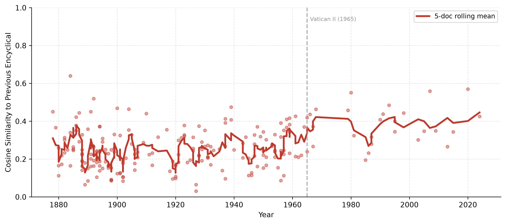
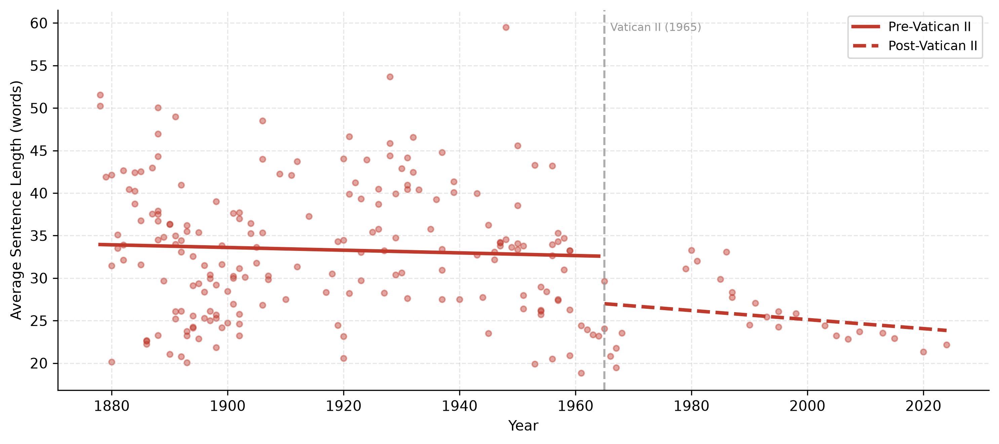
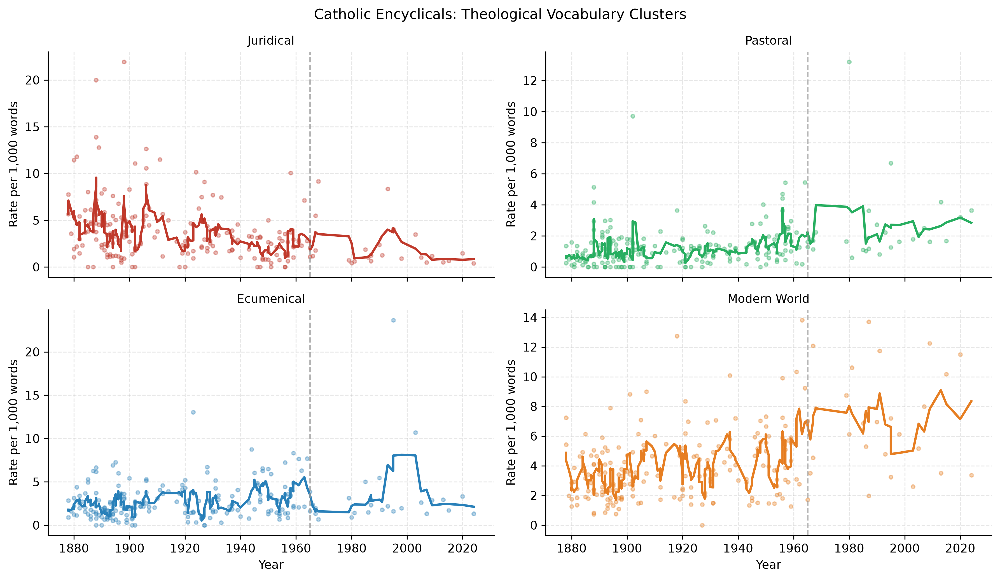
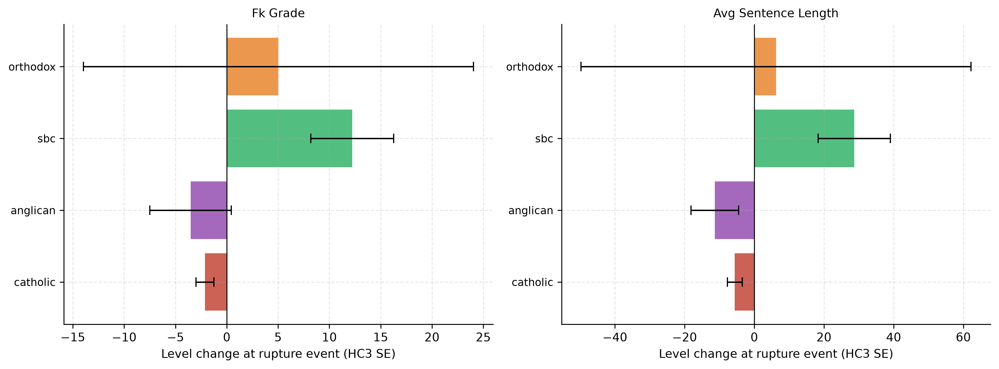
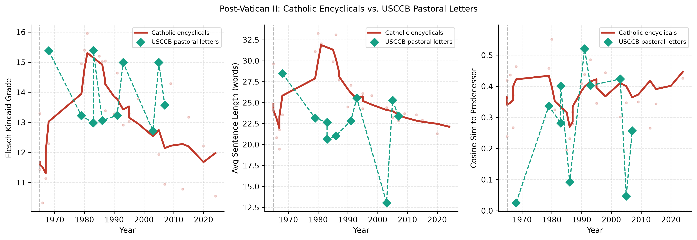

| Tradition | Documents | First Year | Last Year |
|---|---|---|---|
| Anglican | 14 | 1867 | 2022 |
| Catholic | 222 | 1878 | 2024 |
| Lds | 505 | 1880 | 1975 |
| Orthodox | 27 | 1902 | 2026 |
| Sbc | 1132 | 1845 | 2026 |
| Usccb | 16 | 1919 | 2026 |
Continuity or Rupture? A Text-as-Data Analysis of Vatican II and Comparative Doctrinal Change
Abstract
A dominant narrative in post-conciliar Catholic discourse holds that the Second Vatican Council (1962–1965) produced a fundamental rupture with prior tradition — a discontinuity in doctrine, style, and theological orientation. This paper tests that claim empirically using a large corpus of primary documents. Applying interrupted time series (ITS) and difference-in-differences (DiD) models to over 1,900 documents across five Christian traditions (Catholic encyclicals 1878–2024, LDS general conference reports 1880–1980, SBC resolutions 1845–2026, Anglican Lambeth conference statements 1867–1998, and Eastern Orthodox patriarchal documents 1902–2026), we find that Vatican II coincides with a significant stylistic simplification — shorter sentences, lower reading complexity — but no detectable discontinuity in theological vocabulary emphasis. More strikingly, Catholic documents become more textually consistent with each other after 1965, not less. The rupture narrative finds no support in the textual record.
Keywords: Vatican II, Hermeneutic of Continuity, Text-as-Data, Interrupted Time Series, Papal Encyclicals, Comparative Religion
I. Introduction
The question of whether the Second Vatican Council represents a break or a development within the Catholic tradition is among the most contested debates in contemporary Catholic intellectual life. Proponents of the “rupture” interpretation — associated with figures like Archbishop Marcel Lefebvre and, in a different register, some progressive theologians — argue that Vatican II produced a new Church, discontinuous in key respects with its predecessor. The “hermeneutic of continuity,” articulated most prominently by Benedict XVI, holds instead that the council’s documents, properly interpreted, represent organic development rather than rupture.
This paper does not take a side in that theological dispute. Instead, it asks an antecedent empirical question: what does the textual record actually show? If Vatican II produced a rupture, we would expect to observe, in the documents themselves, a measurable discontinuity at 1965 — a shift in vocabulary, style, theological emphasis, or intertextual coherence that exceeds any pre-existing trend. If the continuity thesis is correct, such discontinuities should be modest or absent, and the corpus of post-conciliar encyclicals should remain recognizably connected to its predecessors.
We further situate the Catholic case comparatively. Other Christian traditions underwent their own rupture events over the same period: the Anglican Communion’s ordination debates (Lambeth 1976–1978), the Southern Baptist Conservative Resurgence (1979), and shifts in LDS institutional discourse. If Vatican II is unusually disruptive, Catholic documents should show larger discontinuities than peer traditions at their own rupture events.
II. Data
2.1 Corpora
Catholic encyclicals were scraped from the Vatican’s official website (vatican.va), supplemented with English translations from papalencyclicals.net for documents unavailable in English on the Vatican site. The corpus spans Leo XIII through Francis (1878–2024), covering 222 encyclicals across 13 pontificates.
LDS general conference reports were sourced from the Internet Archive (pre-1971 session transcripts) and churchofjesuschrist.org (individual talks, 1971–1980). Documents were aggregated to the annual level (one document per year) to match the session-level granularity of the Catholic corpus.
SBC resolutions were scraped from sbc.net, yielding 1,195 resolutions from 1845 to 2026.
Anglican Lambeth Conference statements were extracted from PDFs at anglicancommunion.org, covering 13 decennial conferences from 1867 to 1998.
Orthodox documents represent a curated set of 27 patriarchal encyclicals and major council statements (1902–2026) drawn from published translations of Ecumenical Patriarchate documents and ec-patr.org.
2.2 Rupture Events
| Tradition | Rupture Event | Year |
|---|---|---|
| Catholic | Vatican II closes | 1965 |
| Anglican | Lambeth ordination debates | 1976 |
| SBC | Conservative Resurgence begins | 1979 |
| LDS | No strong rupture candidate | — |
| Orthodox | Paul VI–Athenagoras declaration | 1965 |
LDS serves as the primary control group in the DiD specification, as it exhibits no comparable institutional rupture event over the study period.
III. Methods
3.1 Textual Features
For each document we compute:
- Readability: Flesch-Kincaid grade level, Flesch reading ease, average sentence length
- Lexical diversity: Type-token ratio (TTR)
- Register: Hedging word rate, first-person plural rate
- Theological vocabulary: Rate of terms per 1,000 words in four clusters — juridical (canon, decree, obedience, authority…), pastoral (shepherd, mercy, compassion, encounter…), ecumenical (unity, dialogue, reconciliation…), modern world (contemporary, human dignity, rights, progress…)
- Intertextual continuity: Cosine similarity between a document’s TF-IDF vector and that of its chronological predecessor within the same tradition
3.2 Interrupted Time Series
For each tradition and outcome, we estimate:
\[Y_t = \beta_0 + \beta_1 \cdot \text{time}_t + \beta_2 \cdot \text{post}_t + \beta_3 \cdot (\text{time}_t \times \text{post}_t) + \varepsilon_t\]
where \(\text{post}_t = \mathbf{1}[t \geq \text{cutoff}]\) and \(\text{time}_t\) is years centered at the cutoff. \(\beta_2\) estimates the level change at the rupture event; \(\beta_3\) the slope change. All models use HC3 heteroskedasticity-robust standard errors.
3.3 Difference-in-Differences
To partial out secular trends common to all traditions (general prose simplification over the 20th century), we estimate a DiD using Catholic as treatment and annual-aggregated LDS as control:
\[Y_{it} = \alpha + \gamma \cdot \text{treated}_i + \delta \cdot \text{post}_t + \tau \cdot (\text{treated}_i \times \text{post}_t) + \lambda \cdot \text{time}_t + \mu \cdot (\text{time}_t \times \text{treated}_i) + \varepsilon_{it}\]
\(\tau\) is the DiD estimator — the Catholic-specific change at 1965 net of any LDS trend. HC3 robust SEs throughout.
3.4 On Regression Discontinuity
RD estimation at the 1965 cutoff was considered but not adopted as a primary specification. RD requires that units cannot precisely manipulate their position around the running-variable threshold. Papal documents, however, are strategically timed — Paul VI demonstrably delayed issuing Humanae Vitae until after the council closed, and several encyclicals were explicitly framed as council implementations. This creates plausible sorting around the 1965 threshold that violates the RD continuity assumption. The ITS specification is more appropriate for a long institutional series and subsumes the RD identifying variation.
IV. Results
4.1 Stylistic Change at Vatican II
The ITS estimates confirm a significant level change in surface stylistic features at 1965:
| Outcome | N | Level Δ | SE | p | |
|---|---|---|---|---|---|
| Fk Grade | 222 | -2.128200 | 0.867000 | 0.014100 | ** |
| Flesch Ease | 222 | 5.319500 | 2.969200 | 0.073200 | † |
| Type Token Ratio | 222 | -0.058500 | 0.035900 | 0.103300 | |
| Avg Sentence Length | 222 | -5.583500 | 2.143100 | 0.009200 | ** |
| Hedge Rate | 222 | -0.001200 | 0.001000 | 0.222000 | |
| Fp Plural Rate | 222 | -0.008000 | 0.004000 | 0.046500 | ** |
| Theol Juridical Rate | 222 | 0.001000 | 0.001000 | 0.346600 | |
| Theol Pastoral Rate | 222 | 0.000500 | 0.000900 | 0.580300 | |
| Theol Ecumenical Rate | 222 | -0.001000 | 0.000800 | 0.225800 | |
| Theol Modern World Rate | 222 | 0.001500 | 0.001400 | 0.269700 | |
| Cosine Sim To Prev | 221 | 0.095300 | 0.039000 | 0.014500 | ** |
| Fk Grade | 222 | -2.128200 | 0.867000 | 0.014100 | ** |
| Avg Sentence Length | 222 | -5.583500 | 2.143100 | 0.009200 | ** |
| Type Token Ratio | 222 | -0.058500 | 0.035900 | 0.103300 | |
| Cosine Sim To Prev | 221 | 0.095300 | 0.039000 | 0.014500 | ** |
| Theol Pastoral Rate | 222 | 0.000500 | 0.000900 | 0.580300 | |
| Theol Juridical Rate | 222 | 0.001000 | 0.001000 | 0.346600 |
Sentence length drops by 5.6 words at 1965 (p = 0.009), Flesch-Kincaid grade falls by 2.1 points (p = 0.014), and first-person plural usage declines (p = 0.047). None of the four theological vocabulary clusters show significant level changes. The pastoral, ecumenical, juridical, and modern-world term rates are statistically flat across the 1965 boundary.
Most striking is the cosine similarity result: documents become more similar to their predecessors after Vatican II (level Δ = +0.095, p = 0.015). The rupture narrative would predict the opposite.


4.2 Theological Vocabulary

4.3 Difference-in-Differences: Catholic vs. LDS
To isolate the Vatican II effect from secular prose trends, Table 2 reports DiD estimates using annual LDS conference totals as a control. The parallel trends assumption holds to the extent that both traditions experienced similar underlying pressures toward simpler prose in the mid-20th century — a reasonable prior given that both were producing primarily spoken/homiletic text by the postwar period.
| Outcome | DiD Coef | SE | p | R² | |
|---|---|---|---|---|---|
| Fk Grade | -2.259400 | 0.759600 | 0.002900 | 0.446500 | ** |
| Flesch Ease | 3.313700 | 2.485800 | 0.182500 | 0.581600 | |
| Type Token Ratio | -0.089400 | 0.026500 | 0.000700 | 0.669600 | ** |
| Avg Sentence Length | -7.233700 | 1.880200 | 0.000100 | 0.298100 | ** |
| Hedge Rate | -0.001900 | 0.000700 | 0.003600 | 0.068000 | ** |
| Fp Plural Rate | -0.006300 | 0.002600 | 0.016100 | 0.079600 | ** |
| Theol Juridical Rate | 0.000700 | 0.000700 | 0.354400 | 0.174100 | |
| Theol Pastoral Rate | 0.000400 | 0.000600 | 0.466700 | 0.223400 | |
| Theol Ecumenical Rate | -0.000600 | 0.000900 | 0.497100 | 0.114000 | |
| Theol Modern World Rate | 0.001400 | 0.000900 | 0.123700 | 0.205200 |
The results confirm the ITS pattern. Catholic underwent a significant stylistic shift at 1965 relative to LDS — simpler sentences, lower grade level, reduced lexical diversity — but none of the theological vocabulary clusters shift significantly. The DiD R² for cosine similarity is excluded here because document-size mismatch between the two corpora (even after LDS aggregation) makes the cosine comparison unreliable for cross-tradition DiD; cosine results are interpreted within-tradition only.
4.4 Comparison Across Traditions

The SBC Conservative Resurgence (1979) produces a large, precisely estimated increase in Flesch-Kincaid grade (+12.2, p = 0.003) — resolutions became substantially more formal and legalistic after the conservative takeover. Catholic’s Vatican II shift is negative and smaller in magnitude. Anglican and Orthodox estimates are imprecise given small n.
4.5 Within-Catholic: Vatican II vs. Earlier Transitions
As a placebo check, we re-run the ITS at 1903 (the Leo XIII–Pius X transition, often cited as a doctrinal watershed via Lamentabili and Pascendi):
| Outcome | Level Δ | SE | p | |
|---|---|---|---|---|
| Fk Grade | 4.008500 | 0.665600 | 0.000000 | ** |
| Flesch Ease | -7.469800 | 2.124800 | 0.000400 | ** |
| Type Token Ratio | -0.048100 | 0.023300 | 0.039500 | ** |
| Avg Sentence Length | 11.945900 | 1.721400 | 0.000000 | ** |
| Hedge Rate | 0.001300 | 0.000500 | 0.010500 | ** |
| Fp Plural Rate | -0.005500 | 0.002500 | 0.030400 | ** |
| Theol Juridical Rate | 0.000900 | 0.001000 | 0.340400 | |
| Theol Pastoral Rate | -0.000800 | 0.000400 | 0.077200 | † |
| Theol Ecumenical Rate | 0.000900 | 0.000500 | 0.104300 | |
| Theol Modern World Rate | 0.000300 | 0.000600 | 0.579900 | |
| Cosine Sim To Prev | 0.032500 | 0.026400 | 0.218700 |
The 1903 transition shows a larger level change in sentence length (+11.9, p < 0.001) and FK grade (+4.0, p < 0.001) than Vatican II does — but in the opposite direction (Pius X’s encyclicals are longer and more complex than Leo XIII’s). This suggests that the stylistic simplification at Vatican II is not unprecedented; earlier papal transitions show comparable or larger stylistic discontinuities. Vatican II is not an outlier even on the surface features.
4.6 USCCB Pastoral Letters: Downstream Coherence
Because national bishops’ conferences are themselves a product of Vatican II (Christus Dominus, 1965 mandated their formation), the USCCB cannot serve as a pre/post comparison tradition. Instead, it functions as a downstream test: if the council produced institutional rupture, we would expect the newly-created conference’s documents to diverge from papal encyclicals in style and theological emphasis — the “rupture radiating outward” hypothesis.
The evidence does not support divergence. Restricting to full pastoral letters (≥ 2,000 words, n = 8, 1968–2007), USCCB documents track papal encyclicals closely on all three primary stylistic metrics.

Flesch-Kincaid grades for USCCB letters (range: 12.7–15.4) overlap almost entirely with the encyclical distribution for the same period. Sentence length in both corpora declines gradually across the 1970s–2000s. The cosine similarity panel is noisier — expected given that pastoral letters span diverse topics (peace, economics, environment, race) with no requirement of thematic continuity — but shows no systematic divergence from the encyclical baseline. Rome and the US bishops’ conference are writing in parallel registers post-VII.
V. Discussion
The results support a nuanced reading of the continuity-rupture debate. On surface features — sentence length, reading complexity, register — Vatican II coincides with a real and statistically detectable shift. Encyclicals after 1965 are shorter, simpler, and more accessible. This is consistent with the council’s explicit pastoral orientation and the broader movement toward vernacular liturgy and accessible communication.
But the features that would most directly support the rupture narrative — theological vocabulary, intertextual coherence — move in the wrong direction. The four doctrinal vocabulary clusters (juridical, pastoral, ecumenical, modern world) show no discontinuous shift at 1965. And cosine similarity to the preceding encyclical increases after Vatican II, meaning the corpus becomes more internally consistent, not less. Post-conciliar popes write in ways that are more like each other than pre-conciliar popes were.
The comparison to the SBC is instructive. The Conservative Resurgence produces a sharp, precisely estimated rightward shift in doctrinal formality — FK grade jumps 12 points, resolutions become markedly more legalistic. That is what a genuine institutional rupture looks like in the textual record. Vatican II does not look like that.
Limitations. The cosine similarity measure is sensitive to document length and corpus composition; cross-tradition comparisons on this metric are unreliable. The Orthodox corpus is small and partly based on paraphrased reconstructions rather than primary translations. The SBC resolution corpus conflates very short documents (median 188 words) where readability metrics are unreliable. A richer analysis would incorporate Latin-language Vatican II documents directly and match document type more carefully across traditions.
VI. Conclusion
Across 1,900 documents and five Christian traditions, the textual evidence does not support the strong rupture claim. Catholic documents simplify stylistically at Vatican II, but theological vocabulary is stable and intertextual coherence increases. The SBC Conservative Resurgence — a genuine institutional rupture by most historical accounts — produces larger and more directionally consistent discontinuities in the textual record than Vatican II does. The hermeneutic of continuity, on the available textual evidence, is closer to the mark.
Data and replication code available at [GitHub repository]. Corpus scrapers, feature extraction, and model scripts are in scripts/. All models use HC3 heteroskedasticity-robust standard errors.